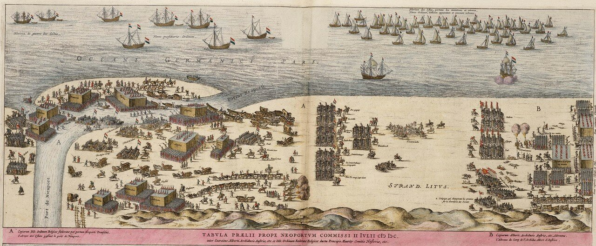

Новая старая задача: готовить вторжение в Англию
Имперский Флот Вторжения скользил по эллиптической орбите, замыкая очередной виток вокруг цели экспедиции.
Юрий Нестеренко. Из жизни инопланетян.
Итак, Федерико Спинола, едва прибыв в Слёйс, развернул крейсерскую войну на морских коммуникациях Англии и Соединенных Провинций. Причем, его не пугало начало зимнего сезона, во время которого галеры обычно отстаиваются в базах. В феврале 1600 года, например, он захватил в качестве приза три голландских корабля. Более того, Спинола фактически взял под свое крыло дюнкеркских корсаров в целях координации их действий с операциями своих галер.
Действия Спинолы стали вызывать беспокойство Англии. Хронист Елизаветы записал в это время: «Королева считает необходимым построить несколько галер для обороны реки Темзы» Планировалось заложить не меньше 12 галер, из них четыре за счет королевы, остальные из средств Лондона и окружающих его графств (Home Counties). Однако реализовать эти планы не удалось, в составе флота ее величества числилась всего одна галера, да и та использовалась в основном для буксировки галеонов и дозорной службы в устье Темзы. Нидерланды, которые никогда до этого времени не имели в своем флоте галер, построили три единицы, в том числе одну (Zwarte Gallei – Черная Галера из Зеландии, построена в Дордрехте) – не свойственных для галер больших размерений. Она была построена специально для блокады Слёйса, и прославилась захватом 180-тонного кромстера Heude, о чем мы рассказывали двумя постами раньше.
Несмотря на успех нескольких первых операций, Спиноле становилось все труднее вести наступательные действия на море. Войска, нанятые накануне его решительного прорыва из Испании в Слёйс, были распущены, так как нечем было платить. Правитель союзных Испании Нидерландов эрцгерцог Альбрехт VII думал лишь об условиях заключения мира с Соединенными Провинциями и Англией и отказался передать Спиноле артиллерию. Противники же Испании не дремали.
В июне принц Мориц Нассауский провел решительную амфибийную операцию, имеющую целью лишить галеры Спинолы береговой инфраструктуры и заодно потрепать дюнкерских приватиров, докучавших кораблям англичан и Соединенных Провинций. 21 июня 1600 года его армия (15—20 тысяч человек) пересекла на малых судах эстуарий Шельды и высадилась у форта Филиппине, после чего в сопровождении флота, следовавшего вдоль берега Северного моря, двинулась к Ньивпорту (Nieuwpoort) и осадила его. Эрцгерцог Альбрехт (10 тысяч пехоты и 1,5 тысячи конницы) двинулся из Антверпена на выручку. В отличие от голландцев, испанцы практически не имели полевой артиллерии.

Битва у Ньивпорта (1 этап), 1600. Автор неизвестен. Atlas van Loon
25 июня Спинола предпринял неожиданную для противника атаку на транспорты англичан и голландцев. Он воспользовался тем, что военный корабль эскорта и транспортные парусники оказались парализованными из-за полного штиля на море. В налете участвовали четыре галеры. И хотя корабль эскорта своей артиллерией сильно потрепал галеры Спинолы, им удалось захватить в качестве приза более 20 транспортов с грузом, включавшим, в частности, лагерное имущество сэра Роберта Сидни.
В наши планы не входит подробный разбор сражения при Ньивпорте, так как флот в нем принимал участие фактически только с одной стороны – корабли Соединенных Провинций оказывали огневую поддержку своим сухопутным силам, и, передвигаясь параллельно берегу, обеспечивали материальное обеспечение войск. Скажем лишь, что в результате генерального сражения 2 июля 1600 года голландцы получили тактическое преимущество, но не смогли решить основной стратегической задачи – ликвидировать «осиное гнездо» испанцев в Дюнкерке. Спинола непосредственно в сражении у Ньивпорта участия не принимал, но после его окончания отвел душу: 5 июля его галеры, воспользовавшись штилем, атаковали флот из 12 военных кораблей и 150 транспортов, и лишь поднявшийся ветер позволил адмиралу голландцев увести свои корабли, понеся минимальные потери. Преследуя голландский флот, Спинола сжег два корабля и захватил пять других. В этот же период корабельный состав его отряда увеличился на две галеры, построенные в Дюнкерке. Оставалась одна трудноразрешимая задача – комплектование военных галер личным составом. Не в силах справиться с проблемой своими силами, Спинола направил в Мадрид за помощью своего секретаря.
Заметим, что к началу семнадцатого века стоимость содержания одной галеры выросла на одну треть по сравнению с периодом битвы при Лепанто (1571) и достигла 13 500 дукатов. Содержание одной галеры обходилось примерно на сорок процентов дороже, чем содержание одного галеона, имевшего значительно меньший экипаж и несравненно большую огневую мощь. Моряков для своих галер Спинола мог вербовать лишь среди необученных бургундских крестьян, так как эрцгерцог Альбрехт не дал морякам ни одного солдата. Запрос на поставку 30 рабов из Испании остался без ответа. И это несмотря на то, что с венгерского фронта войны с турками в Геную поступило в этот период более 400 пленных. Приходилось на роль гребцов брать голландцев, что грозило опасностью удара в спину в самый решающий момент. Не проще было и с обеспечением галер запасными веслами и рангоутом. За шесть последних месяцев Спинола получил разрешение на вырубку всего 200 деревьев, чего с трудом хватило на замену весел лишь на четырех галерах. Оценивая потребности следующей кампании, Спинола просил у испанских властей 13 000 солдат и 600 000 дукатов на содержание эскадры из 12 галер. Государственный Совет Испании 5 октября поддержал просьбу Спинолы, попросив Филиппа III незамедлительно перевести ему 100 000 дукатов и обеспечить увеличение эскадры в Слёйсе на шесть новых галер. Правда, эта просьба к королю была обусловлена одним замечанием: «если мирные переговоры с Англией провалятся».
В марте 1601 года генуэзский адмирал получил указание прибыть в Испанию, где он вновь представил королю план вторжения в Англию. В связи с тем, что в 1601 году все десантные силы испанцев были задействованы на поддержку ирландских повстанцев, проведение новой кампании в Англии было отложено на 1602 год.
Спинола направился в Италию, где он имел полномочия завербовать для участия в боевых действиях во Фландрии дополнительно пять-шесть тысяч солдат, командование которыми было возложено на брата Федерико – Амброзио Спинолу. Там же Федерико договорился об отправке в Корунью подготовленных галерных рабов для восьми новых галер, обещанных королем.
Между тем за период отсутствия Спинолы во Фландрии произошли серьезные изменения. Мятежные голландцы попытались блокировать выход из Слёйса, заполнив фарватер каменными блоками, доставленными из Норвегии. Увеличились силы флота, в том числе за счет вновь построенных голландских галер, привлекаемые для блокады испанских баз. И тем не менее испанские галеры продолжали свои действия на коммуникациях противника. Их основной задачей стало обеспечение морской блокады последней базы голландцев во Фландрии – Остенде. Исполняющий обязанности командующего кузен Спинолы Аурелио в рамках поставленной задачи напал на конвой с боеприпасами для осажденного Остенде, захватив несколько груженых судов.
В ноябре 1601 года Федерико Спинола встретился в Генуе со своим старшим братом Амброзио. На встрече они договорились предоставить совместно заем в 470 000 дукатов (117 500 фунтов стерлингов) испанской короне. Амброзио возглавил отряд из 9000 миланцев для отправки во Фландрию сухопутным путем, а Федерико должен был пойти туда же морем, погрузив на восемь новых галер две тысячи солдат испанской пехоты.
Но долог и труден оказался этот переход, о котором мы расскажем в следующий раз.